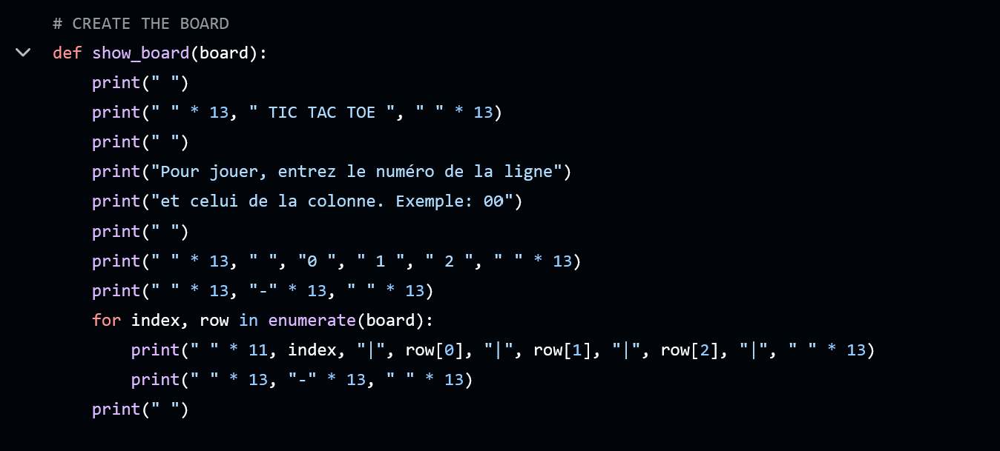
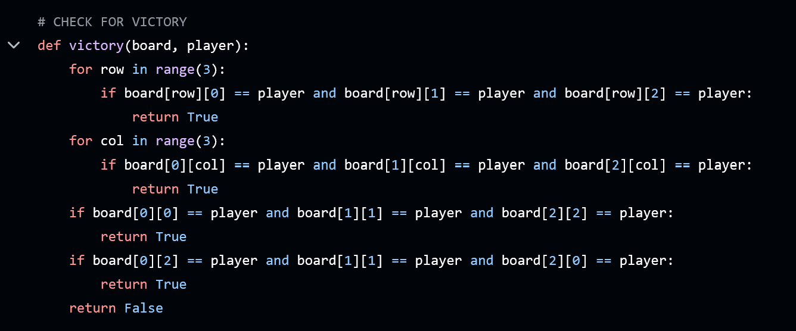
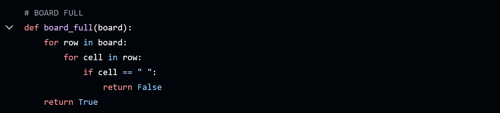
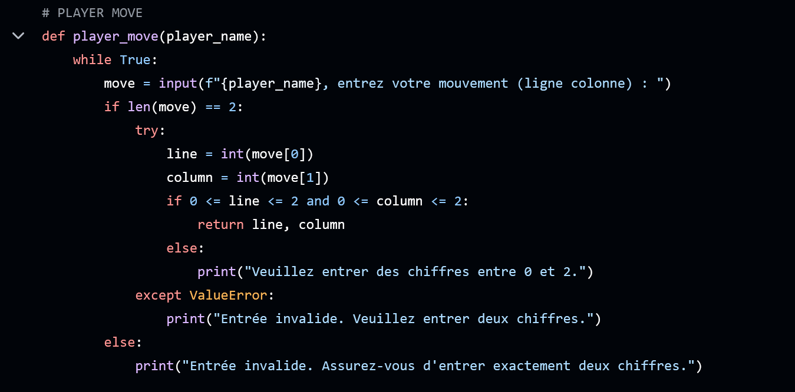
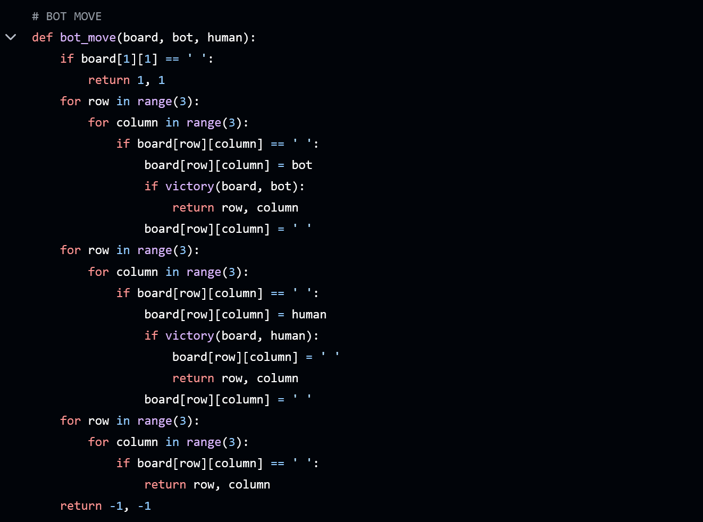
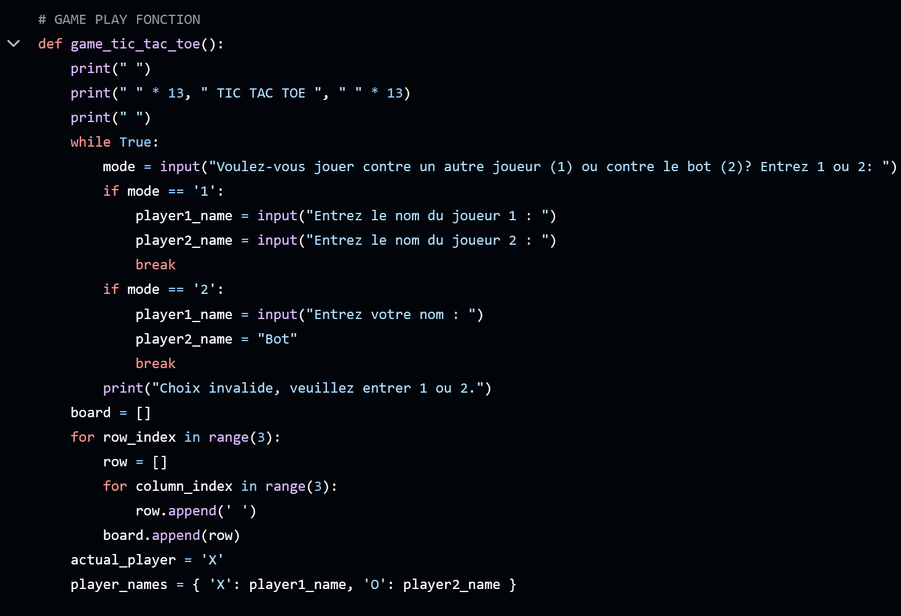
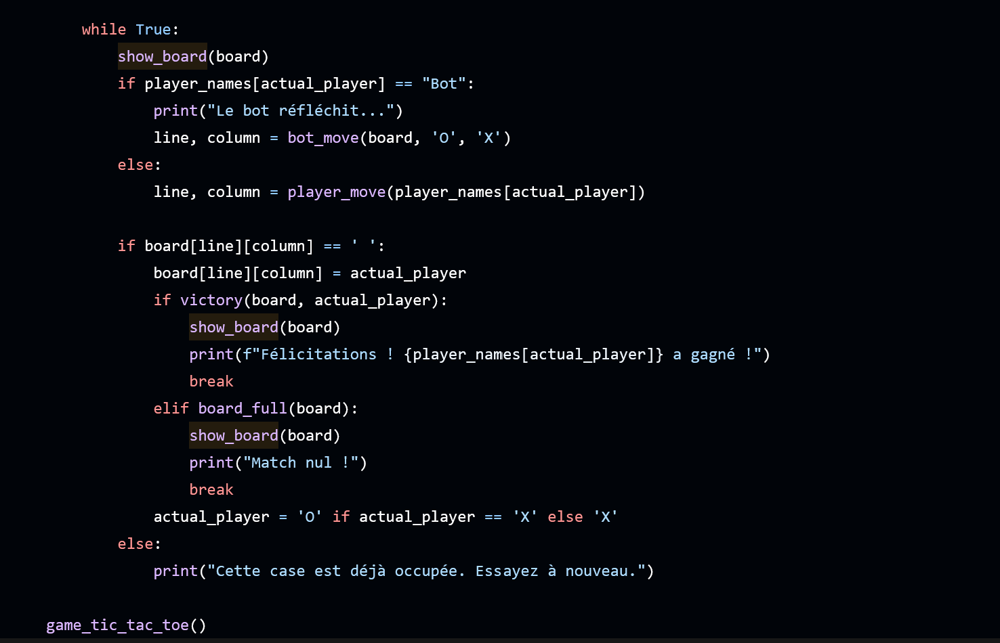

PORTFOLIO

Welcome to my software developer portfolio!
Here, you'll find a curated selection of my projects that showcase my skills in various programming languages and frameworks, with a strong focus on clean code and user experience.
I am passionate about leveraging technology to solve real-world problems.
Each project reflects my dedication to continuous learning and improvement as I embrace new challenges and learn new programming languages.
Feel free to explore my work and reach out if you have any questions or collaboration ideas.
Thank you for visiting!
INDEX
- PYTHON
Explore my applications and solutions developed using Python
- HTML/CSS
Discover my creative web designs and layouts crafted with HTML and CSS
TIC TAC TOE
PYTHON PROJECT 1 :
Tic Tac Toe is a classic two-player strategy game that has entertained people for generations.
The game is played on a 3x3 grid where players take turns marking a square with their respective symbols—X or O.
The objective is simple: be the first player to align three of their symbols in a row, either horizontally, vertically, or diagonally.
This project showcases my implementation of Tic Tac Toe in Python, demonstrating my programming skills and understanding of game logic.
The game features two modes: a two-player mode where users can compete against each other and a bot mode where players can challenge a computer opponent.
Throughout this portfolio, I will explore the various components of the game, provide insights into the code structure,
and share video demonstrations of gameplay.
Game Features
The Tic Tac Toe game includes the following key features to enhance the user experience:
Two-Player Mode: In this mode, two players can compete against each other by taking turns
to enter their moves. The game prompts players to input their desired row and column, and the board is updated in
real time. The game checks for a winner after each move, ensuring an engaging experience until either player wins
or the game ends in a draw.
Bot Mode: Players can choose to play against a bot, which adds an extra layer of challenge.
The bot uses a simple strategy to make its moves, checking for winning opportunities and blocking the player's
moves when necessary. This mode allows players to practice their skills against a computer opponent.
Code Breakdown
The Tic Tac Toe implementation in Python consists of several key functions, each responsible for a
specific part of the game's functionality.
To further illustrate the key components of the Tic Tac Toe code, I have included several screenshots highlighting
important sections and their functions. Each screenshot is accompanied by an explanation to clarify its role within the overall implementation.
Below is an overview of the main components of the code:

Creating the Board
The show_board function is responsible for displaying the current state of the game
board to the players. It prints the grid layout, including the numbers representing each cell,
and updates the display after each move.
This function enhances the user experience by providing a clear visual representation of the game.

Check for Victory
The victory function checks if a player has won the game.
It evaluates all possible winning combinations: three rows, three columns, and two diagonals.
If any of these combinations contain the same player's symbol, the function returns True,
indicating a win.

Checking if the Board is Full
The board_full function determines whether the game board is completely filled.
It iterates through all cells in the grid and checks for empty spaces.
If there are no empty cells left, the function returns True, indicating a draw.

Player Move Logic
The player_move function handles user input for player moves.
It prompts the player to enter their move in the format of row and column numbers.
The function includes validation to ensure that the input is valid, checking for correct
lengths and ranges, and returns the coordinates of the move.

Bot Logic
The bot_move function implements the bot's strategy for making moves.
The bot first checks if the center cell is available; if so, it occupies that space.
Then, it evaluates the board for any winning opportunities or potential blocks against the human player.
If neither condition is met, the bot chooses the first available cell, ensuring the game continues smoothly.


Game Loop
The game_tic_tac_toe function orchestrates the flow of the game.
It initializes the game by asking players to choose their mode (against another player or the bot)
and sets up the board. The function contains the main game loop, which alternates turns between players,
checks for victory or a full board, and updates the game state accordingly.
Error Handling
Error handling is a crucial aspect of the Tic Tac Toe game,
ensuring a smooth user experience and preventing crashes due to invalid input.
The game includes several mechanisms to manage potential errors:
- Input Validation: The player_move function incorporates robust input validation.
It checks that the player's input consists of exactly two characters and that both characters are numeric.
If the input is not valid, the function provides informative feedback, prompting the player to try again
with the correct format.
- Range Checking:
After confirming that the input is numeric, the function checks if the entered row and column numbers
are within the valid range (0 to 2). If the numbers are outside this range, the player is informed, and
they are asked to enter valid coordinates.
- Occupied Cell Handling:
During gameplay, if a player attempts to occupy a cell that is already filled,
the game checks the board state and notifies the player that the selected square is not available.
This prevents invalid moves and ensures that the game remains fair and enjoyable.
These error handling mechanisms contribute to a user-friendly experience,
allowing players to focus on the game without being frustrated by unexpected issues.
By providing clear instructions and feedback, the game enhances player engagement and
enjoyment.
Video Demonstrations
To provide a comprehensive understanding of how the Tic Tac Toe game operates,
I have included several video demonstrations showcasing various gameplay scenarios.
Each video highlights different aspects of the game, from player interactions to the bot's decision-making
process. Here are the details: